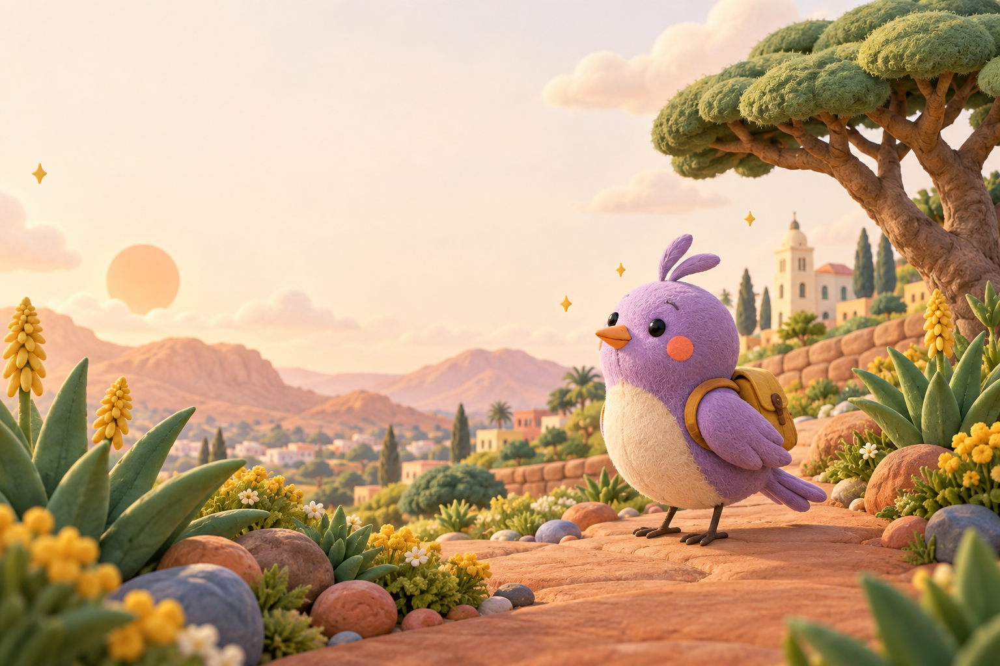

Adventure
Eight worlds and 32 short missions. Each mission brings three Tigrinya words or phrases to recognise, read and match with their meanings.
Eritrean Tigrinya · iPhone & iPad
Meet a word. Find its letters. Hear a story.
Qana: Tigrinya for Kids gives children short Tigrinya adventures, games, letter tracing and picture books. It is made for ages 6–8; younger children can play with a grown-up beside them. The app is in English or Norwegian, and Tigrinya is what children learn.
Take a look aroundThe picture books are read aloud in Tigrinya by a real narrator. Qana never uses the microphone.

8worlds to explore
32short missions
3words or phrases each
92 words and phrases in all,
plus 3 picture books.
Find your own way in
Short missions, playful practice and room to try again.
Eight worlds and 32 short missions. Each mission brings three Tigrinya words or phrases to recognise, read and match with their meanings.
Word pairs, Word detective, Bubble pop and Feed the bird, each with five levels and stars to earn, plus Listen & find.
All 32 fidel letter families, seven forms each. Trace them with a finger or Apple Pencil, then try the letter quiz.
Three picture books (My family, Food and The weather) read aloud in Tigrinya by a human narrator, with a picture game.
Stickers, medals, flowers and the words found so far: a place to see learning grow.
A clear choice for grown-ups
The first two worlds, all letters and tracing, every game and all three stories are free. There is no subscription and no account.
Qana Family
A one-time in-app purchase that opens the other six worlds and up to six learner profiles on the device. Family Sharing is supported.
Apple shows the price in your currency before you buy.
About buying and restoring Qana FamilyBuilt around family life
Everything stays on the device. Qana has no accounts, ads, analytics or tracking, and it sends nothing to us.
Settings, profiles, backups, reminders, purchases and every link out of the app sit behind a parent gate. In the grown-ups’ area you can export a backup, remove a profile or erase all Qana data.
The picture books and a few example sentences use published recordings of a human Tigrinya narrator from LIDA Stories. The Tigrinya words and most example sentences are spoken from clips inside the app, made in advance with an AI voice. Letters have no recordings, and Qana does not score pronunciation.
Read the privacy policy